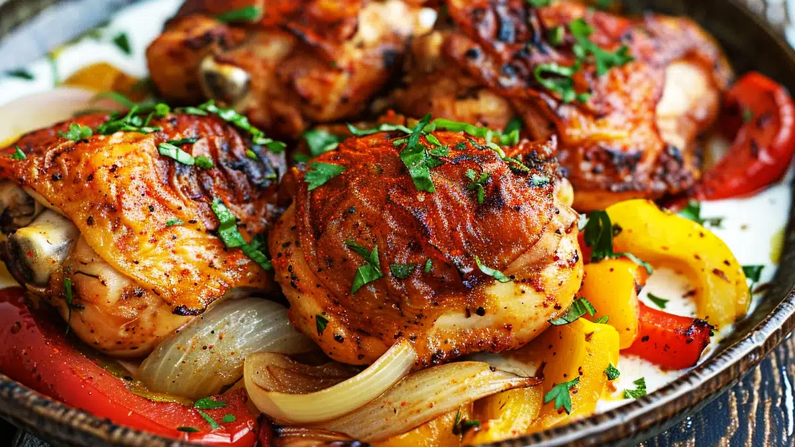

Sauté de poulet au paprika et crème fraîche
Le sauté de poulet au paprika et à la crème fraîche est un plat qui séduit par sa simplicité et sa richesse en saveurs.
Temp de préparation
- Temps de préparation : 20 mins
- Temps de trempage : 4h (min)
- Temps de cuisson : 2h
Ingrédients
- 2 ailes de poulet
- 1 cuillère à soupe de paprika en poudre
- 1 cuillère à soupe de concentré de tomate
- 1 cuillère à soupe de crème fraîche
- Persil frais pour la garniture
- 4 champignons de Paris
Instructions
- Laissez mijoter le tout avec un cube de bouillon de poulet, en ajustant de sel et de poivre selon votre goût. Après environ 30 minutes, ajoutez la crème fraîche et laissez réduire la sauce à feu doux. Il est crucial de ne pas faire bouillir la crème pour maintenir une texture onctueuse et digeste.
- Pour personnaliser ce plat, vous pouvez ajouter des champignons de Paris préalablement sautés. Cette touche additionnelle apporte une texture agréable et complète merveilleusement les saveurs du plat.
- En termes d’accompagnement, le sauté de poulet au paprika et à la crème fraîche se marie parfaitement avec du riz blanc, des pommes de terre ou même des patates douces cuites au four, faisant de ce plat un repas complet et réconfortant.
- Cette recette, inspirée des cuisines traditionnelles d’Europe de l’Est, est idéale pour un repas convivial et économique. Elle permet d’utiliser des morceaux de poulet souvent moins prisés, les rendant irrésistibles une fois mijotés.
- Allumez votre four 180°C (th. 6).et attendez le temp que cela chauffe le convive uen fois chauffer mettez y votre repas et surveillez jusqu'a la fin sans en lacher d'une semelle. surveillez a fond contre risque de brulûre
- Enfournez les cuisses pour environ 40 min de cuisson et c’est prêt !
Nutrition
The table bellow shows nutritional values per serving without the additional fillings
| calories |
277kcal |
| Carbs |
0g |
| proteins |
20g |
| Fat |
22g |